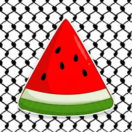

BOYCOTT
Destek · Support
BOYCOTT, bir markanın bağımsız boykot kaynaklarında nasıl değerlendirildiğini gösterir. Uygulama kendi değerlendirmesini yapmaz; her kaynağın kendi kararını ve kanıt bağlantısını gösterir.
Nasıl kullanılır?
- Metin: Marka ya da ürün adını yazın.
- Barkod: Ürünün barkodunu çerçeveye getirin.
- Logo: Markayı karenin içine ortalayıp çekin ya da galeriden bir fotoğraf seçip markayı kareye alın.
Sık sorulanlar
Marka bulunamadı diyor. Markanın takip ettiğimiz kaynaklarda olmaması, boykot listesinde olmadığı anlamına gelmez. Adıyla aramayı ya da başka bir yöntemi deneyin.
Bilgi yanlış görünüyor. Kararlar kaynaklara aittir; "Kanıtı incele" ile kaynağın sayfasına bakabilirsiniz. Yine de hata varsa bize yazın.
Liste ne sıklıkla güncelleniyor? Kaynaklardaki boykot durumları her gece kontrol edilir.
İletişim
Support
BOYCOTT shows how independent boycott sources assess a brand. The app makes no judgment of its own; it shows each source's own verdict and evidence link.
How to use
- Text: Type a brand or product name.
- Barcode: Place the product's barcode inside the frame.
- Logo: Center the brand inside the square and take a photo, or pick a photo from your library and fit the brand in the square.
FAQ
It says the brand wasn't recognised. A brand missing from the sources we follow doesn't mean it isn't on a boycott list. Try searching by name or another method.
The information looks wrong. Verdicts belong to the sources; tap "View evidence" to see the source's page. If something is still wrong, write to us.
How often is the list updated? Boycott statuses in the sources are checked every night.